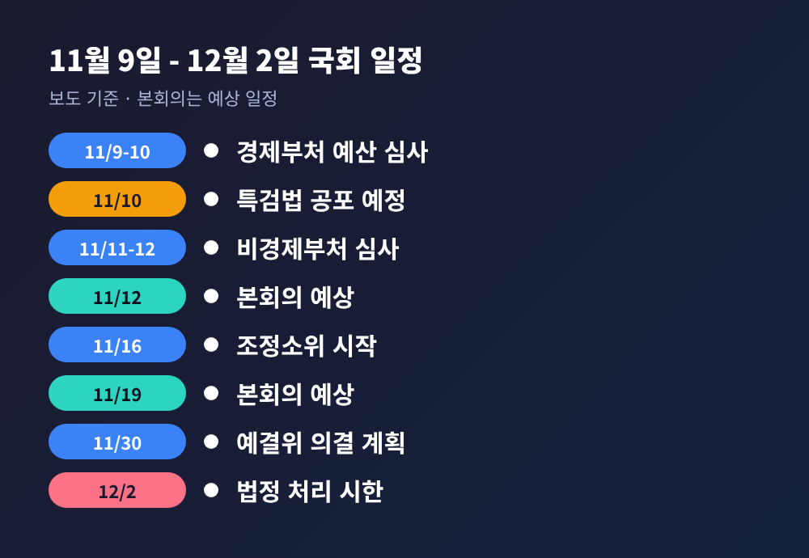
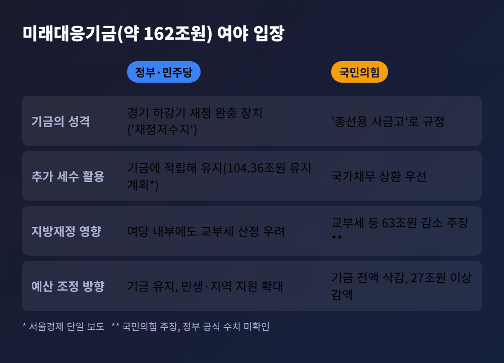
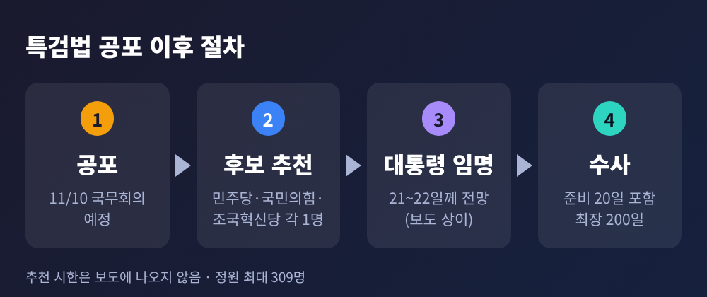
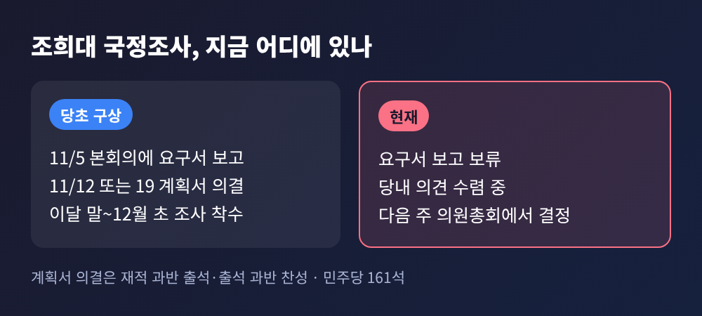
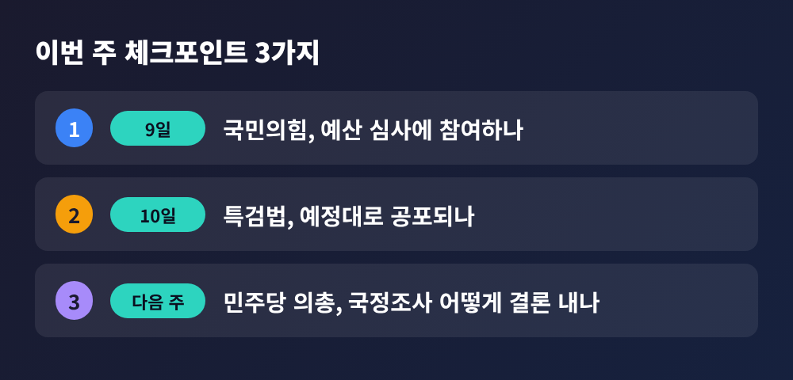

국회 이번 주 일정, 예산 부처별 심사와 특검법 공포·국정조사 쟁점

오늘은 11월 9일부터 시작되는 한 주의 국회·정국 일정을 정리해 보려 합니다.
예산안 부처별 심사, 특검법 공포, 조희대 대법원장 국정조사까지 세 갈래가 한꺼번에 움직입니다.
날짜순으로 짚고, 여야가 각각 무엇을 주장하는지 나란히 놓아 보겠습니다.
세 줄 요약
- 9~12일 예결위가 내년도 예산안을 부처별로 심사합니다. 쟁점은 약 162조원 규모의 미래대응기금입니다.
- 10일 국무회의에서 조작기소 특검법이 공포될 예정입니다. 이후 특검 후보 추천과 임명 절차가 이어집니다.
- 조희대 국정조사는 12일·19일 계획서 처리가 거론됐지만, 요구서 보고조차 보류된 상태입니다.
■ 무슨 일인가: 한 주에 세 일정이 겹칩니다
가장 먼저 움직이는 것은 예산입니다.
국회 예산결산특별위원회는 9~10일 경제 부처, 11~12일 비경제 부처를 심사합니다. 9일 오전 10시에는 재정경제부·기획예산처·산업통상부·고용노동부 등 장관들의 예결위 출석이 잡혀 있습니다.
10일은 정치적으로 무게가 실린 날입니다.
국무회의에서 조작기소 특검법이 공포될 예정이라는 보도가 나왔습니다. 다만 공포일의 근거는 기사에 설명되어 있지 않아, 대통령실 발표로 확인하셔야 합니다.
12일과 19일은 본회의가 예상되는 날입니다. 한병도 원내대표는 3주간 매주 목요일 본회의를 열자고 의장에게 요청했습니다.

■ 왜 중요한가: 정치 현안이 예산 시한과 맞물립니다
예산안의 법정 처리 시한은 12월 2일입니다.
일정표대로라면 16일부터 조정소위 심사를 거쳐 30일 예결위 전체회의에서 의결합니다. 여유가 많지 않습니다.
여기에 특검법과 국정조사가 겹칩니다. 국민의힘은 국회 밖 투쟁을 이어가고 있고, 예산 심사에 참여할지는 아직 정하지 않았다고 보도됐습니다. 여당은 "예산을 볼모로 삼지 말라"고 요구합니다. 정치 충돌이 심사로 번지면 시한 내 처리가 어려워질 수 있다는 우려가 나옵니다.
■ 쟁점 1. 예산안: 162조원 기금을 어떻게 볼 것인가
정부가 제출한 내년도 예산안은 약 820.9조원입니다. 시정연설은 11월 2일에 있었습니다.
쟁점의 중심에는 미래대응기금이 있습니다. 반도체 호황으로 늘어난 세수를 바탕으로 한 기금으로, 규모는 약 162조원(162.3조원으로 표기한 보도도 있습니다)입니다.
여당과 정부의 입장은 이렇습니다.
- 경기가 나빠질 때 쓸 재정 완충 장치입니다. 한병도 원내대표는 "재정저수지"라고 표현했습니다.
- 서울경제는 이 가운데 104.36조원을 유지하려는 계획이라고 전했습니다.
국민의힘의 입장은 다릅니다.
- 기금을 "총선용 사금고"라 부르며 전액 삭감을 요구합니다.
- 추가 세수는 기금 조성보다 국가채무 상환에 먼저 써야 한다는 주장입니다.
- 기금과 연계된 세제 개편으로 내년 지방교부세 30.5조원, 교육재정교부금 32.5조원 등 합계 63조원이 덜 내려간다고 주장합니다. 이 수치는 국민의힘 주장이며, 정부의 공식 수치는 확인되지 않았습니다.
흥미로운 점은 여당 내부에서도 기금을 지방교부세 산정에서 제외하면 지방 세입이 줄 수 있다는 우려가 있다는 것입니다.
국민의힘은 별도로 100대 문제 사업을 중심으로 27조원 이상을 깎고, 청년·안전·민생·일자리에 약 11.5조원을 늘리자고 제안합니다. 기본사회위원회, 신고포상금, 특수활동비 등이 대상으로 거론됩니다. 세부 증감액은 서울경제 단일 보도에 근거합니다.

■ 쟁점 2. 특검법: 공포 이후의 절차와 위헌 논란
법안은 6일 본회의에서 재석 168명 중 찬성 167명, 반대 1명으로 가결됐습니다. 국민의힘은 표결에 불참했습니다.
공포 뒤에는 순서가 정해져 있습니다. 더불어민주당·국민의힘·조국혁신당이 후보를 한 명씩 추천하고, 대통령이 그중 한 명을 임명합니다. 추천 시한은 보도에 나오지 않습니다. 임명 시점은 민주당이 21일께로, 다른 보도는 22일께로 전망해 엇갈립니다.
규모는 최대 309명, 준비 기간 20일을 포함해 최장 200일입니다. 내란 특검의 317명보다는 적습니다.
여당 쪽 설명은 이렇습니다.
- 논란이 컸던 공소취소 조항과 사건 이첩 요구 조항을 삭제했습니다.
- 서영교 법사위원장은 수사 대상이 윤석열 정부 시절의 검찰·국정원·감사원이라고 강조합니다.
- 민주당은 파견 검사에게 종전 형사소송법을 적용하는 것이 개정 법률 부칙에 근거한다고 설명합니다.
국민의힘과 법조계의 문제 제기는 다릅니다.
- 민주당이 추천하고 대통령이 임명하는 구조는 이해충돌이라는 주장입니다.
- 이원석 전 검찰총장은 "위헌 법률"이라고 비판했습니다. 검찰의 직접수사권이 10월 2일 폐지됐는데 특검에는 옛 법을 적용한다는 점이 이유입니다.
- 국민의힘은 위헌법률심판 제청 신청을 검토 중입니다.
- 조국혁신당의 조국 혁신정책연구원장도 위헌·위법 소지를 지적했고, 민주당 정성호 의원은 "제대로 수사될지 의문"이라고 했습니다.
공소취소 가능성을 두고도 해석이 갈립니다. 아시아경제는 국회 전문위원이 형사소송법 255조를 준용하면 별도 규정 없이도 공소취소가 가능하다고 봤다고 전했습니다. 같은 기사는 강제 이첩권이 빠진 만큼 기존 재판의 공소를 직접 취소할 수 있는지는 따로 따져야 한다고 설명합니다.
수사 대상은 보도상 12개 사건·영역입니다. 이재명 대통령 관련 사건과 문재인 정부 시기 사건이 함께 담겼습니다.

실무 난관도 있습니다. 검사 인력이 부족해 앞선 종합특검은 58명을 기소하고도 공소유지 검사가 3명이라는 보도가 있습니다(단일 소스). 이미 재판 중인 사건이라 기록 확보가 쉽지 않을 것이라는 현직 판사의 말도 전해졌습니다.
■ 쟁점 3. 조희대 국정조사: 12일, 19일은 어디까지 가능한가
민주당은 당초 5일 본회의에 요구서를 보고하고, 12일이나 19일 계획서를 의결한다는 구상이었습니다. 계획서는 재적 과반 출석에 출석 과반 찬성이면 됩니다. 민주당 의석이 161석이라 단독 의결도 가능합니다.
그런데 5일 보고는 이뤄지지 않았습니다. 당내 의견 수렴을 이유로 보류됐고, 다음 주 의원총회를 거쳐 최종 결정하겠다는 입장입니다.
당내 시각은 갈립니다.
- 이성윤 최고위원은 "한시라도 빨리 탄핵에 착수해야 한다"고 말했습니다.
- 정성호 의원은 장기간 매달리게 될 수 있다며 숙의를 주문했습니다.
국민의힘은 국정조사를 대법원장 탄핵의 사전 단계로 보고 "사법부 겁박"이라 반발합니다. 의원 60여 명이 로텐더홀에서 농성을 벌이기도 했습니다. 민주당은 반대로, 12·3 비상계엄 당시 대응 등 규명되지 않은 의혹을 확인하는 절차라고 설명합니다.
정리하면 12일·19일 계획서 처리는 확정 일정이 아니라 가능성의 하나입니다.

■ 전망: 이번 주에 봐야 할 세 가지
첫째, 9일 국민의힘의 예산 심사 참여 여부입니다. 불참하면 일정 자체가 흔들립니다.
둘째, 10일 공포가 예정대로 이뤄지는지입니다. 국민의힘은 대통령이 재의를 요구하도록 압박하겠다는 계획이지만, 재의요구 여부를 다룬 보도는 확인되지 않았습니다.
셋째, 민주당 의원총회의 국정조사 결론입니다. 결론에 따라 12일·19일 본회의의 무게가 달라집니다.

예산 심사는 법정 시한이라는 끝이 정해져 있고, 나머지 두 사안은 끝이 정해져 있지 않습니다. 이 비대칭이 이번 주 이후 협상의 변수가 될 것으로 보입니다.
끝으로 한 가지만 덧붙이겠습니다.
이번 주 일정은 날짜가 아니라 순서로 읽는 편이 낫습니다. 예산이라는 시한 위에 두 개의 정치 사안이 올라타 있기 때문입니다.
숫자 대부분은 언론 보도에 근거합니다. 공포일과 임명 시점은 바뀔 수 있으니, 대통령실과 국회 공지로 확인하시길 권합니다.